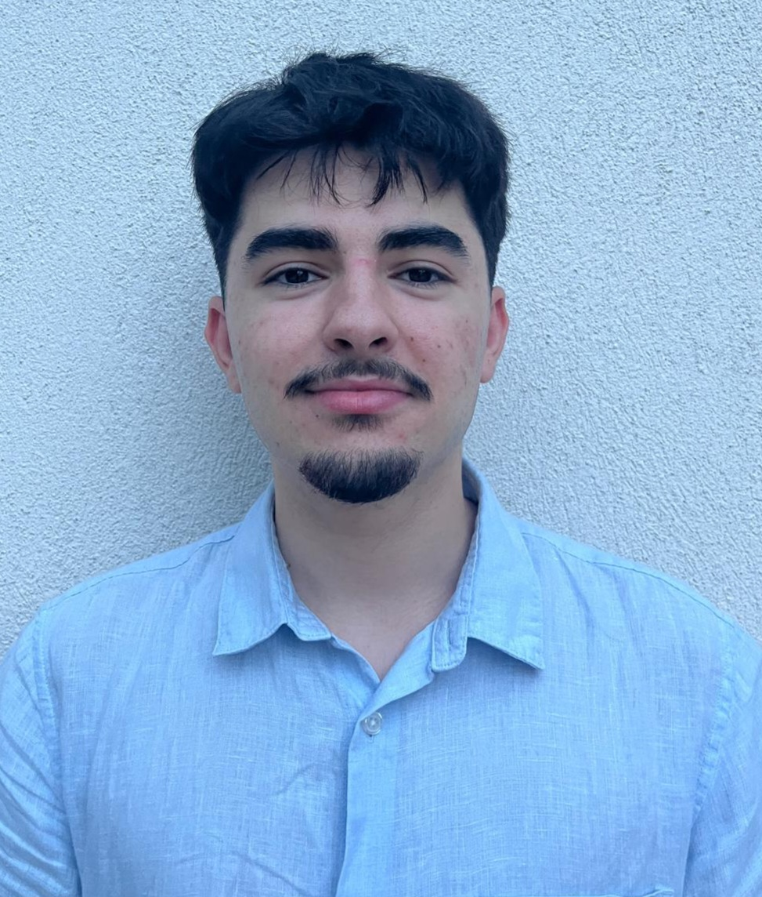

Damien
Martins--Alonso
Welcome to my e-portfolio!
Hello, and welcome to my digital space. I am Damien Martins--Alonso, an engineering student at ENSEEIHT (N7) following a rigorous foundation in intensive scientific preparatory classes (CPGE).
I created this portfolio to share my engineering journey, my technical projects, and my core professional aspirations. My goal is to combine a deep passion for system design with hands-on industrial experience, particularly in the aeronautics sector.

Elevator Pitch
My Unique Value Proposition.
A brief overview of who I am today at ENSEEIHT, my technical background in intensive STEM classes, and my future ambition to work in the aeronautics and embedded systems sector.
Engineering Course
Technical skills and applied engineering projects from my curriculum.
🛠️ Technical Skills
- Languages: Python, SQL, C++ / Arduino
- Software: FL Studio, SiriL, PixInsight, Adobe Suite
- Soft Skills: Teamwork, Problem Solving, Financial Accuracy, Work under pressure
Miniature Equatorial Mount Design (TIPE)
2025 - 2026Engineered an equatorial mount to compensate for Earth's rotation. Analyzed dynamic modeling and managed machining constraints (overconstrained system h=4). Developed the embedded control using Arduino, integrating light sensors with anti-reflective shielding and a camera module for fine tracking.
Result: Reduced light trailing by 5x and achieved a theoretical sharpness gain of 42x.
Career Development
My professional journey and role models.
Role Models Analysis
1. Embedded Systems Integration Engineer
Focuses on bridging hardware and software in flight systems (Aeronautics). Shows the concrete application of my current studies.
2. R&D & Prototyping Engineer
Inspires my interest in early-stage product design, testing, and finding innovative technical solutions.
3. Manufacturing/Production Manager
Shows the importance of understanding the factory floor, which motivates my current search for an operator internship.
Work Experience
Cashier @ Craft Butchery
2024 - 2025Customer service, rush hour management, and maintaining financial accuracy under pressure.
Municipal Worker @ Local Municipality (Chantier Jeunes)
2023Selected via a motivation interview for a civic municipal project. Executed manual maintenance and urban renovation tasks (painting ground markings, varnishing outdoor furniture) under municipal staff supervision.
Discovery Intern @ Bakery
2019Immersion in artisanal production cycles and adaptation to early-morning teamwork constraints.
International Mobility
Preparing for a global engineering perspective (17 weeks objective).
Languages
-
 French: Native
French: Native
-
 English: B1
English: B1
-
 Spanish: B1
Spanish: B1
3 Mobility Projects
- 🌍 Germany (Munich/Hamburg): Aerospace industry internship in Europe's leading technical hubs.
- 🌍 Canada (Montreal): Academic exchange or engineering internship within the North American aeronautics ecosystem.
- 🌍 UK / Asia (V.I.E): Volunteer for International Experience in embedded electronics prototyping.
Sustainability & Civic Engagement
Giving back to the community and raising awareness on global challenges (40h objective).
The Trial of King Kong
2026Participated in an interactive theatre play addressing Harassment and Sexist & Sexual Violence (HVSS). The experience involved analyzing three scenarios before acting as the jury to debate and judge the cases, guided by a legal professional.
Climate Fresk
2026Took part in the collaborative workshop "La Fresque du Climat" to map and deeply understand the systemic causes, mechanics, and consequences of global climate change.
Pink Run (Festival Futur Proche)
2026Ran the "Course Rose" during the Festival Futur Proche. A charity sporting event dedicated to raising funds, showing solidarity, and spreading awareness for the fight against breast cancer.
Sport & Other Activities
Passions that drive my creativity, focus, and resilience.
Astrophotography
Deep-sky imaging (nebulae, galaxies, comets) and image pre-processing. Directly inspired my TIPE.
Football
Playing at a regional competition level. Teaches me endurance, discipline, and team spirit.
Music & Audio
Beginner piano player.